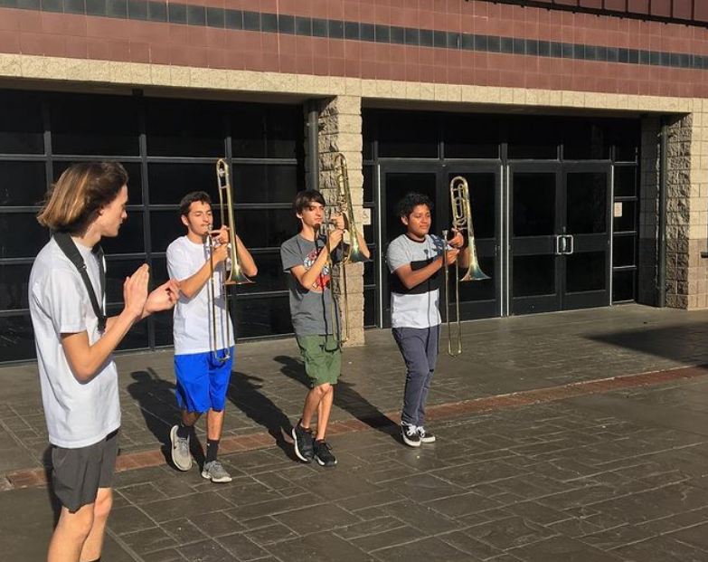
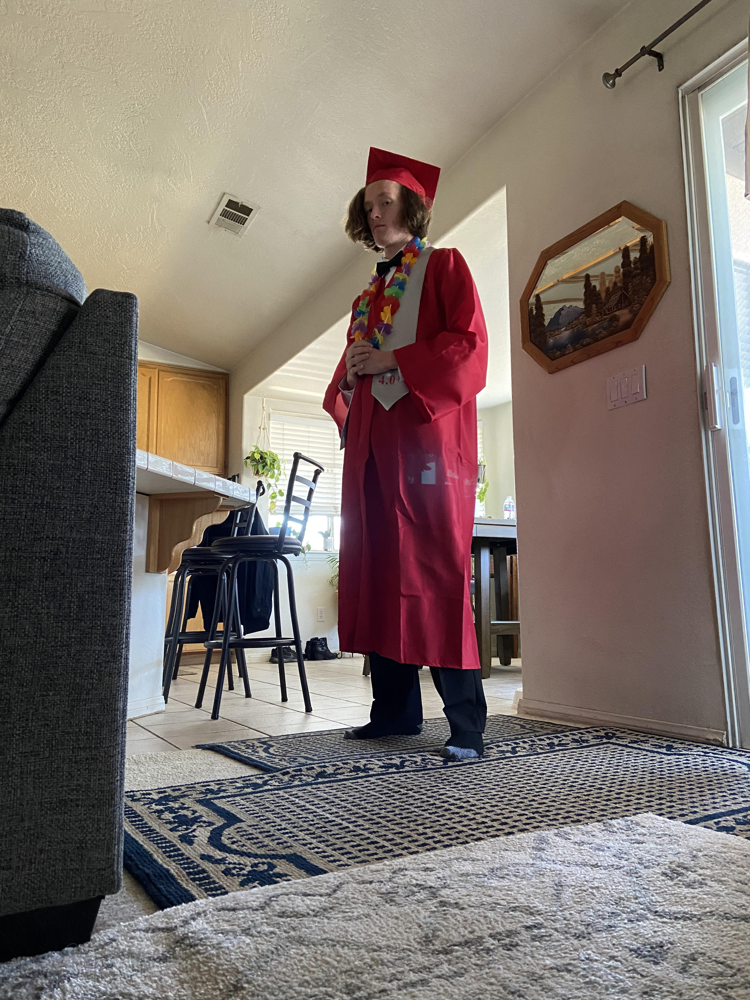
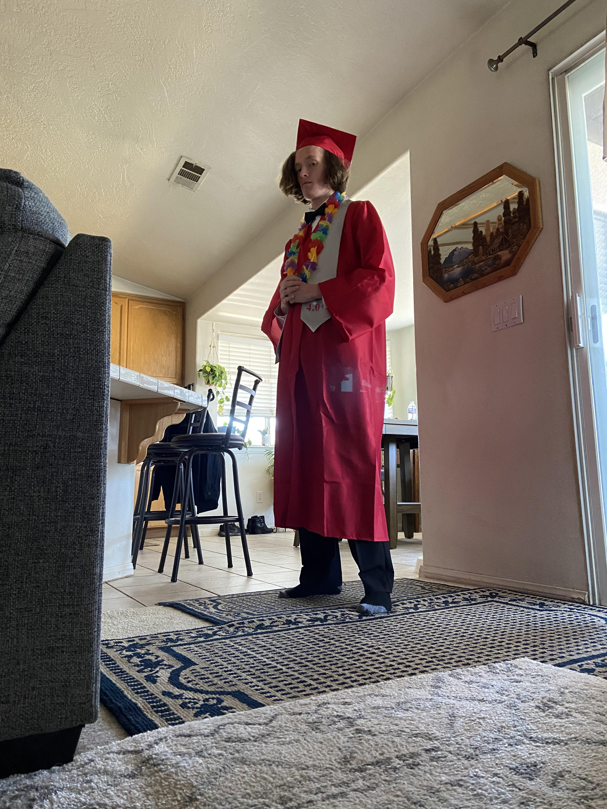
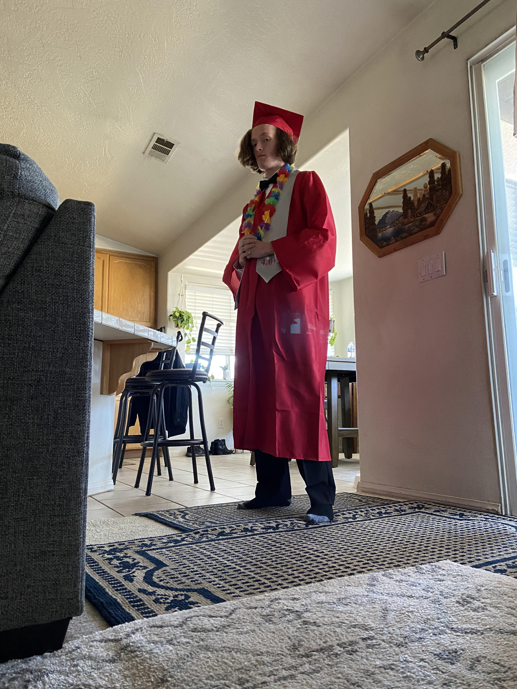

Jason Hubbard
Hello! I am a current student at the University of California, Riverside (UCR) in Riverside California. I am a first year history major and I am planning to specialize in 20th and 21st century U.S. history. I graduated from Oak Hills High School with all A’s and a cumulative 4.07 GPA, something that I have continued into college. I have passed multiple AP exams while in high school, including the AP U.S. history and AP calculus AB tests with a score of 5. Outside of academics, I have performed in various honor bands while in high school, including several county and college bands, including the Tournament of Roses Honor Band. I have been given several awards for my musical achievements.
I am an excellent speaker and am very outgoing. I took a debate class my freshman year of college where we debated historical topics, and I have taken part in various peer educator classes during my time in high school. I was also trombone section leader in my high school band for two years. I am very well versed in leadership as well as speaking in front of large crowds and I can handle stressful situations when it comes to both. I am also self-driven and am very good at setting and meeting deadlines/goals. I am also very creative and can often be found researching historical events, talking about them, or writing music. My family and professors at UCR would be able to attest to my creativity, self motivation, and overall enthusiasm towards whatever I put my mind to.
I have been doing historical research my entire life. Ever since I was 6 or 7 years old I have been fascinated with history. I have only enriched both my knowledge and love for learning about history over the course of my life. I have been engaged in every history class I have ever taken and if hired, I will not only put forth my best effort towards this job but I will continue my lifelong ambition of pursuing knowledge. I have built up the skill of juggling multiple tasks at once, especially when it comes to historical research. I have achieved all of the above while continuing my own individual historical research so rest assured hiring me will be a safe bet on an employee that remains committed to their job and the development of future knowledge.
Experience
Peer Educator
• Helped 1st year students with any work they needed help on
• Math, Science, History, Biology, Spanish, French, etc.
• Experience in tutoring
Trombone Section Leader
• Head of the trombone section, led sectionals, taught students, etc.
• Leadership experience
Leader of Science Club
• Led and called meetings into order
• Kept data on attendance
• Made financial decisions for the club
• Leadership experience
Education
University of California Riverside
Oak Hills High School
Portfolio

.JPG)
 

